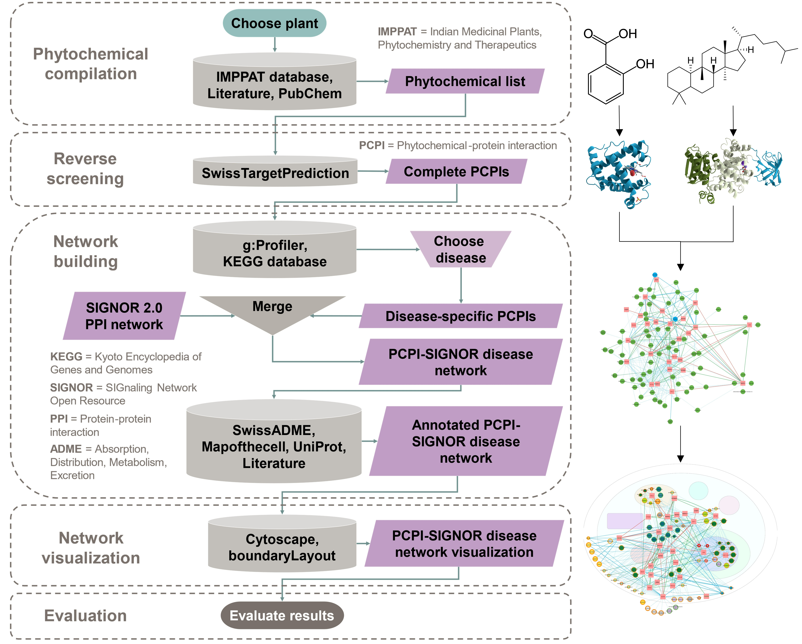
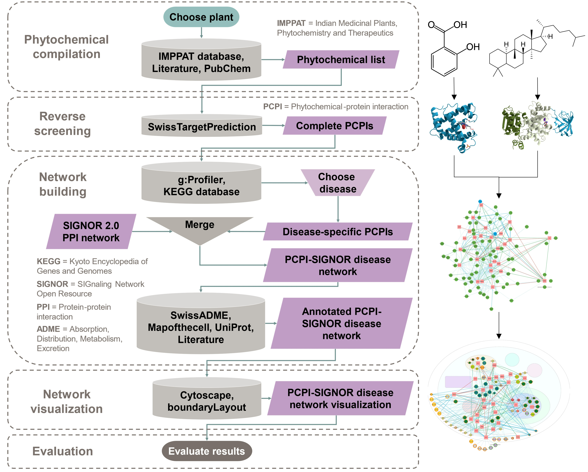

Workflow for visualizing phytochemical-protein interaction (PCPI) networks
Created by Yumi L. Briones, Alexander T. Young, Fabian M. Dayrit, Armando Jerome H. De Jesus Jr., and Nina Rosario L. Rojas
Created by Yumi L. Briones, Alexander T. Young, Fabian M. Dayrit, Armando Jerome H. De Jesus Jr., and Nina Rosario L. Rojas
